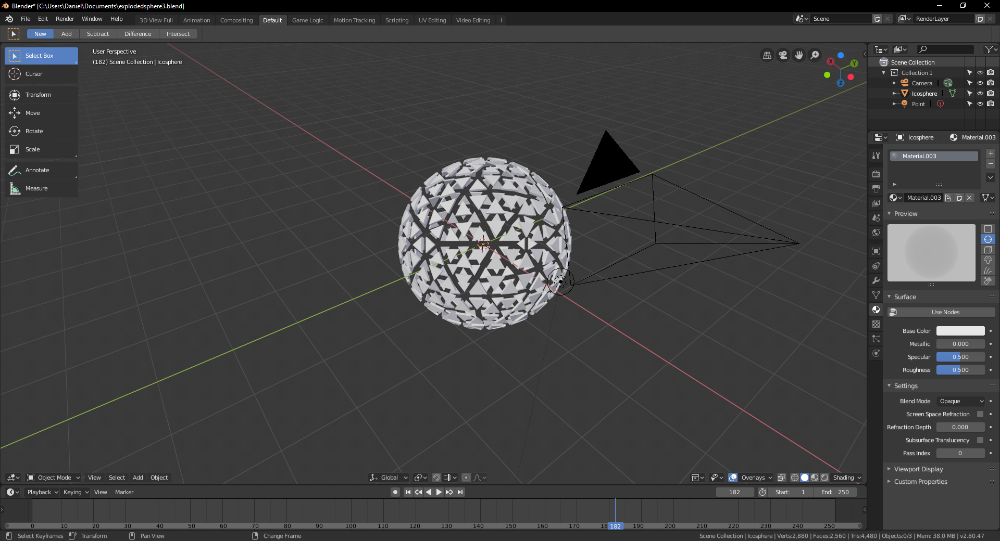
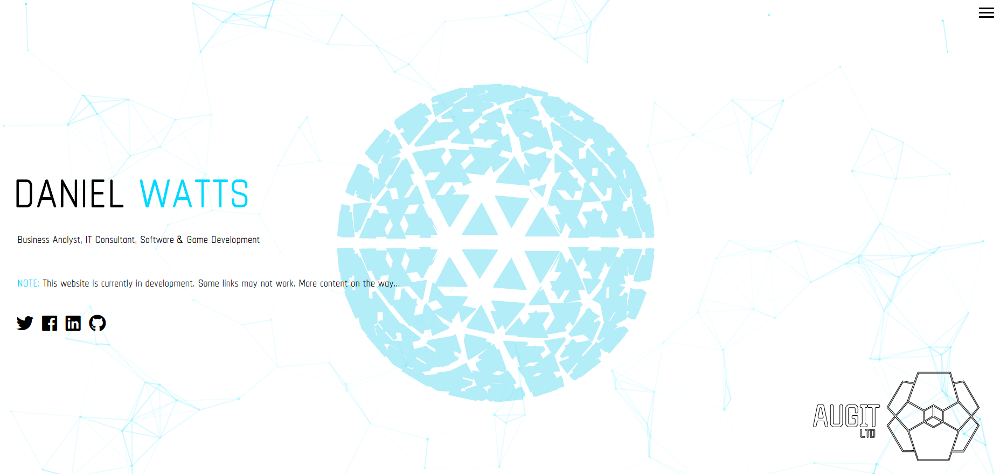
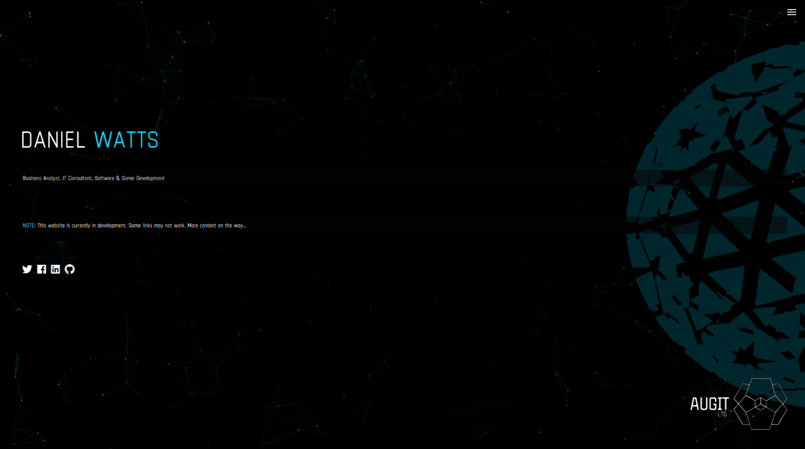

The Power Of JavaScript: Generating Visuals
Art and Code Collide
As somebody who has a huge interest in game development, I figured I would try to express this with an eye catching background for my website.
The first program I ever wrote, many years ago - was a simple tool that generated interesting mathematical shapes and sacred geometry. I was fascinated by the concept of generative art and obviously had to show everyone what I’d made. I don’t think my family understood what the point was, but it ignited a deep curiosity in me.
My college course was in Interactive Digital Media. I had some great tutors, but there wasn’t much in the way of specialisation. One week, we’d be doing some 3D modelling, another - game programming, the next - video editing. It was great exposure to each of these industries and artforms, but didn’t really allow us to deep dive into any one subject that we really clicked with.
I was encouraged to continue exploring digital media and head to university, but instead decided to pursue an IT career. The creativity never died out however, and I carried on making digital art, video games, editing videos etc. as a hobby, and occasionally, for a bit of pocket money.
Game Jam
A while ago, just as I was starting to lose touch with my creativity - I entered a 48 hour game jam - competitions in which a theme is chosen that you have to make a game about. You have to make the art, music and code within the time frame, and at the end, participants vote eachothers entries based on set categories. These are great fun! And an effective way of stress-testing yourself and seeing what you’re capable of.
My entry was received really well. Considering I’d never published a game before, this re-ignited that desire to create interactive media and artistic programming again. All the experience I’d had making music, experimenting with software, 3D modelling, using Adobe Creative Suite etc. as a hobby and throughout college all came together to something I was actually proud of… an un-paid project that I was actually able to finish! I realised I was capable of creating things that people actually liked!
Selling indie video games is difficult work. The market is extremely saturated. Whilst I still plan on releasing some games at some point, I decided that I couldn’t work on something consistently that would provide a good ROI, particularly whilst working a full time job. I put the project to cryo-sleep for the time being…
Business and Creativity
I know the IT industry pretty well. I have progressed in it quickly and through various sectors and positions. If there’s one element of it that always got under my skin, it was the public perception of IT professionals. You might have seen ‘The IT Crowd’… IT departments are still often put in a dark corner of the windows where the windows are blocked out.
It’s an old fashioned way of thinking… IT is one of the most creative and artistic industries there is. Innovation happens all of the time, and the skillset and knowledge that a talented IT technician has frequently cross over into the world of art and design. Even the seemingly boring stuff, like file formats, video encoding, hosting technologies, network architecture etc. Having subject knowledge in these areas can make you a better designer, can allow you to experiment and push the boundaries of the creative world.
I wanted to distance myself from the stereotype of ‘IT Technician’, and prove that there is such a thing as somebody who can solve problems, whilst creating solutions and original pieces of work. My brand needed to show this…
Technology is the backbone of modern marketing. And creativity is at the core of innovation.
Websites Of The Future
A little while ago, a friend of mine pointed me towards paper.js (http://paperjs.org/), a powerful JavaSript library for creating interactive, animated vector drawings. I put it in my mental archive and thought about how I might use something like that.
Whilst working out the aesthetic of my website, I did some research into some of the available libraries and which ones were the most powerful and versitle. I came across two that spoke to me:
Particles.js
https://vincentgarreau.com/particles.js/
I’d never rendered anything like this in a browser before - so was concerned about things like performance and compatibility. The demo was very impressive, so I decided to start experimenting with it. It certainly had the generative, futuristic look I was going for.
It took me a while to work out the dependencies, and how to properly integrate something like this into the background of a site without causing distortion to the other elements. Eventually, I got it working. It looked great! (Maybe I had rose-tinted goggles on from the hours of development at this point) So I sent it to somebody to test.
They opened it up on their work computer, and their response was this has slowed my computer down so much, everything is crawling! Clearly, this is not ideal, so I checked the CPU usage. It was extremely high! I run a half decent processor in my rig, but my demographic would primarily be using business grade laptops… I got to work to fix this, added some alterations to the code, and with the help of an FPS lock function limiting the frequency that the calculations were called, I drastically reduced how hungry the script was.
Stage one of my background was complete!
Three.js
https://threejs.org/
Then… I discovered three.js. The website has some examples of things that have been built using this library, and some of them are absolutely stunning. Some of the most unique and inspiring websites I’ve ever come across all sit on this one page, but there are not many, 100 - 120 at most. The library allows 3D models, animations, interactivity, to be rendered right within the browser using WebGL. It also supports GPU acceleration, so that CPU issue I had with particles? Won’t see that here. I had never used anything like this before, with the exception of a little bit of Unity programming, but I knew that this was what I was looking for. I wanted my website to look like it was from the future, like it was a terminal on a spaceship. WebGL, a completely new technology to me, was the answer.
I got to work with creating the 3D object that I wanted, I went through a few iterations until I got what I thought looked good. I installed appropriate blender plugins, modelled some geometry that I liked, and exported the model. I studied countless three.js examples online, trawled through source code, and could not get it working like I expected.

I was getting black boxes, console errors, dependency issues (none of which were a fault of the library itself), but with some persistence, I managed to get something to render in my browser.
EUREKA!
Now, I had to try and somehow implement this into my website without breaking anything else…
After much tinkering, I got my desired effect. It might not be to everybodies taste, but the website now has live WebGL rendering, and it’s efficient - even able to run in mobile browsers. From here on out, I can start experimenting with interactivity, more complex animation, rendering, shadow casting. Yet another technology rabbit hole to get lost and inspired in…

